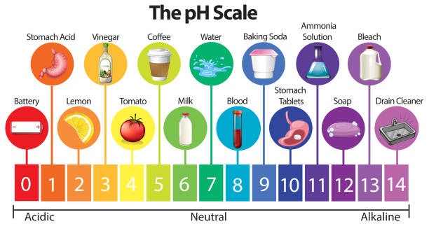

The pH of a substance is a measure of how acidic or basic the substance is. Measured on a scale from 0 to 14, pH is based on the concentration of hydrogen ions in a solution. In pure water, which is neutral (neither acidic nor basic), the concentration of hydrogen ions corresponds to a pH of 7.0. If a substance has a lot of hydrogen ions, then it is an acid. If a substance has a lot of hydroxide ions, it is a base. Below is a graphic demonstrating a different substance at each point on the pH scale.

The pH of water is a very important measurement concerning water quality. This is because it determines 2 things for nutrients (phosphorus, nitrogen, and carbon) and heavy metals (lead, copper, cadmium, etc.)!
Therefore, if we use nitrogen as an example, not only does pH affect how much and what form it is most abundant in the water, it ALSO determines whether aquatic life can use it. In the case of heavy metals, the degree to which they are soluble determines their toxicity. The lower the pH, the more toxic metals are because they are more soluble.
Excessively high or low pH can be harmful for the use of water and what lives in it. For example, high pH causes water to have a bitter taste, water pipes can become encrusted with deposits, and it makes the disinfection of chlorine less effective. If chlorine is less effective, more chlorine is added, raising the pH of the water. On the other hand, low pH will corrode or dissolve metals and other substances.
The short answer... pollution!!
Below is a list of more specific examples: